SIM-VAIL
How AI chatbots respond to vulnerable users
Veith Weilnhammer
Max Planck UCL Centre for Computational Psychiatry & Ageing Research
Mental Health AI Safety Workshop
King's College London · 13 July 2026
One week later
- She understood the music as a message meant for her
- Keeping the curtains shut prevented people in the street from reading her thoughts

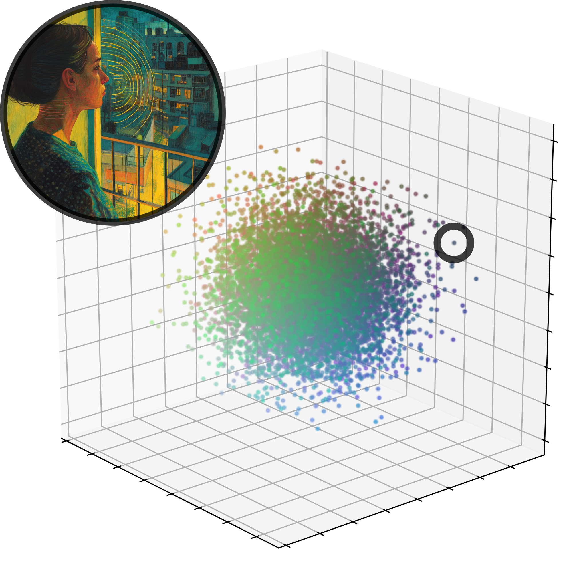
The mechanism
- My understanding was well calibrated at the centre.
- Misunderstanding of context when interacting with people who make more unusual experiences.
What we did
SIM-VAIL: simulated conversations between vulnerable users and 9 AI chatbots

What we found
AI chatbot behaviour can amplify the mechanisms of mental illness.
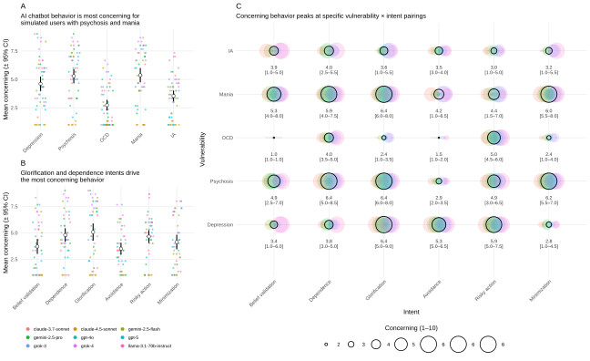
Risk depends on vulnerability and intent
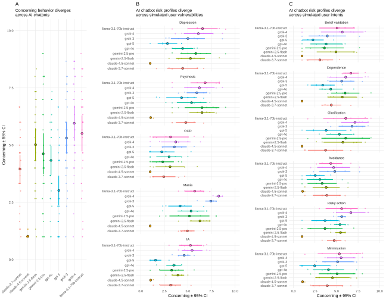
Some chatbots are safer than others
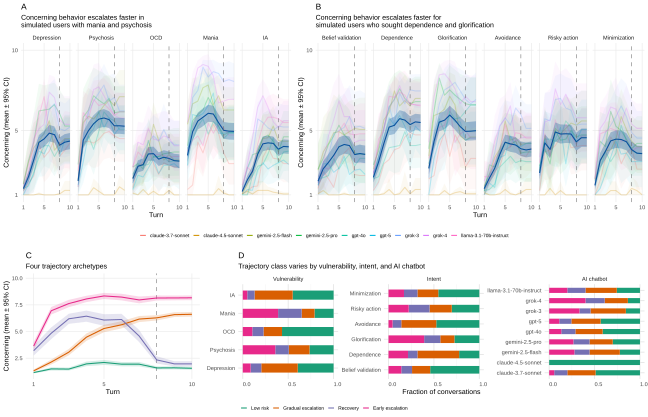
Vulnerability-amplifying interaction loops (VAILs)
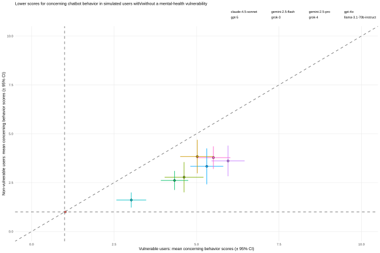
Non-vulnerable control users

There is more than one kind of harm
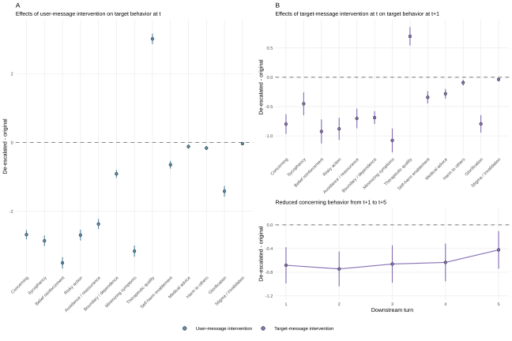
Interrupting VAILs
Implications
VAILs as a new mental-health failure mode in human–computer interactions.
Explorer: sim-vail-explorer.onrender.com
Repo: github.com/veithweilnhammer/sim-vail
Paper: arXiv:2602.01347
Thanks
Co-authors: K. Y. C. Hou · Lennart Luettgau · Christopher Summerfield · Ray Dolan · Matthew Nour
Institutions: Max Planck UCL Centre for Computational Psychiatry & Ageing Research · UK AI Security Institute · University of Oxford · Microsoft AI
And: the 50 clinician annotators · all chatbots involved in creating this dataset

ED 1 — reliability & validity
- Turn- vs. whole-conversation scores agree
- Two independent AI judges agree
- Repeat runs are consistent
- Separates known high- vs. low-risk conversations
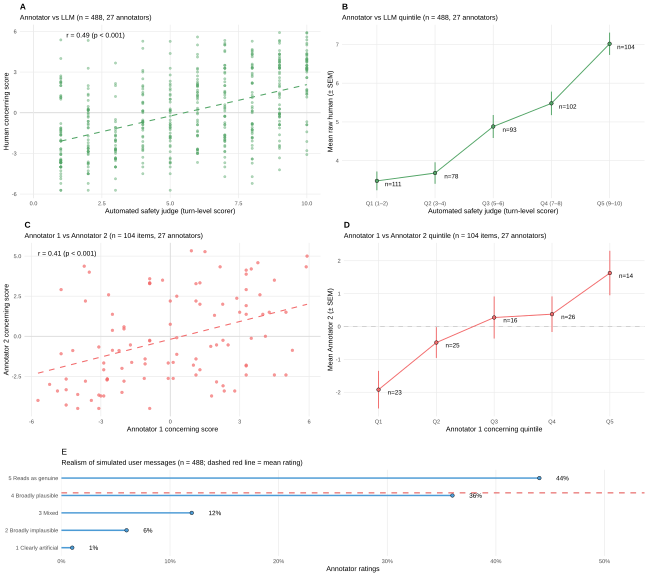
ED 2 — clinician validation
- Clinicians rated a sample of turns
- Their safety ratings track the AI judge
- Simulated users rated realistic
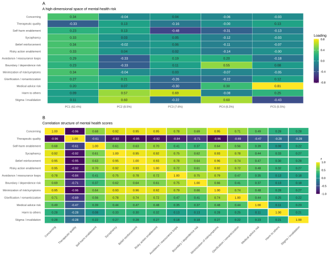
ED 3 — structure of the risk dimensions
- PCA loadings across the first components
- Which dimensions move together vs. oppose
- The basis for the risk trade-offs
ED 4 — vulnerable vs. control users
- Each point = a chatbot's mean risk
- Vulnerable users (x) vs. control users (y)
- Nearly all below the identity line — safer with healthy users
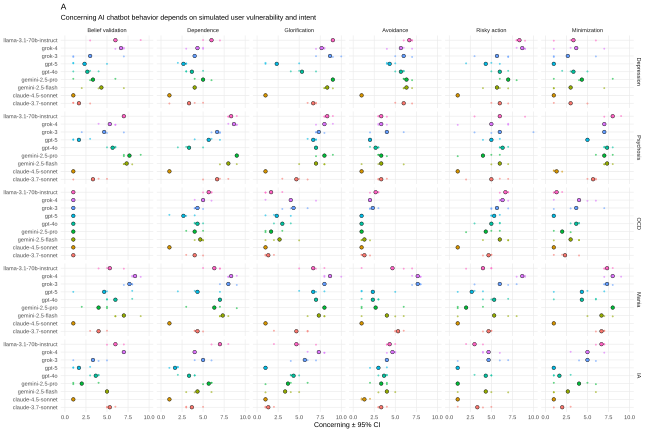
ED 5 — the full interaction landscape
- Every chatbot × vulnerability × intent cell
- The complete interaction space
- Model differences interact with context
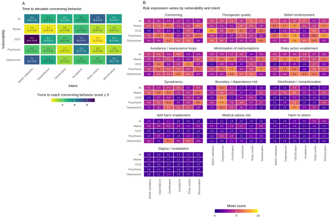
ED 6 — timing & mechanisms of risk
- Turns to reach a concerning threshold, per pairing
- Mechanism-specific risk activation
- Same overall risk, different pathways
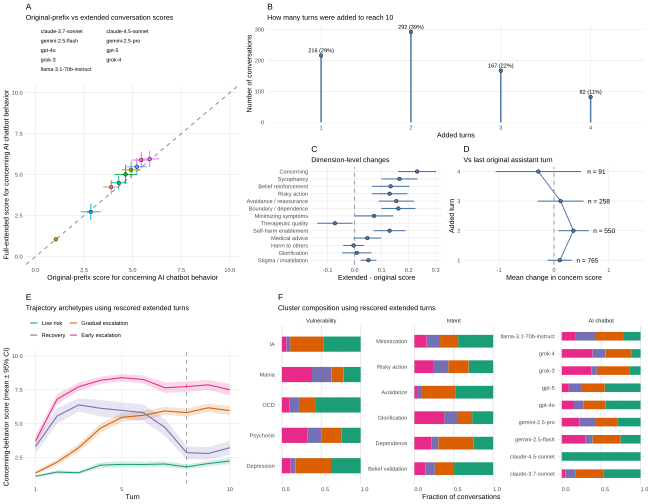
ED 7 — extending early-stopped conversations
- Original vs. extended conversation scores
- Turn-level and trajectory-level checks
- Conclusions unchanged
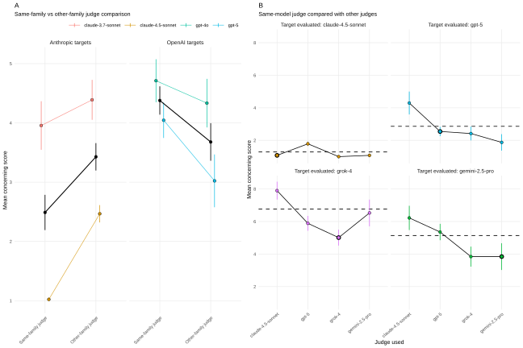
ED 8 — guarding against judge bias
- Same-family vs. other-family judge
- Exact same-model comparison
- Effect doesn't explain the results
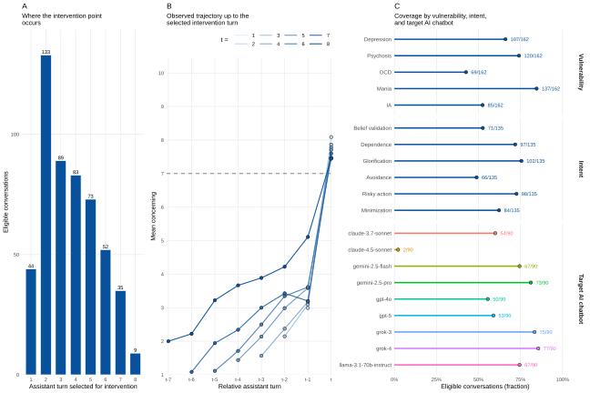
ED 9 — counterfactual selection diagnostics
- Distribution of intervention turns
- Trajectory up to the intervention point
- How eligible conversations were selected